Alexiy Zhandarov
Informatics B.Sc Student
Home BottomPaper Analysis on Real-Time 3D Scene Reconstruction from Monocular Video
May 20, 2022
In this blog post, I will review and analyze the paper NeuralRecon: Real-Time Coherent 3D Reconstruction from Monocular Video published in CVPR 2021 [1] After a brief introduction and going over the relevant terms, I will attempt to explain the algorithm and framework as simply as possible, observe an example, and finally dissect the results and see what it all means for the future of computer vision.
Showcase of the proposed framework.[2]
Contents
I. Introduction
II. Main Contributions
III. Important concepts and walkthrough of the procedure
IV. Datasets
V. Related Works
VI. Method & Implementation
VII. Experiments & Results
VIII. Conclusion & personal remarks
IX. References
Introduction
Scene reconstruction is one of the central tasks in 3D computer vision with currently numerous applications. 3D reconstruction has seen a wide range of usage within the medical industry, computer animation and graphics, virual reality(VR) and augmented reality(AR).
Focusing in on the latter for example, to enable realistic and immersive interactions between the desired effects and the surrounding physical environment, the 3D reconstruction has many standards to fulfil; it needs to be accurate, coherent and performed without any noticeable delay.
Many of these reconstructions are often estimated by fusing depth measurements from special sensors, such as structured light, time of flight, or others into 3D models. While these can be extremely effective, they require special hardware making them more cumbersome and expensive than systems that rely solely on RGB cameras.
Another aspect to consider is the real-time aspect. While camera motion can be tracked accurately with state-of-the-art visual-inertial SLAM systems [3], real-time image-based dense reconstruction remains to be a challenging problem due to low reconstruction quality and high computation demands. Slow and low quality algorithms are naturaly undesirable and can be unreliable when requiring precise results. The proposed framework 'NeuralRecon' attempts to address these issues. Moreover the method proposes a way avoiding the common path of depth-based methods, which uses TSDF fusion and per frame analyzation, and rather predicts it in a local window.
Figure 1. Comparison between depth-based methods and the proposed 3D reconstruction method.
Main Contributions
NeuralRecon is a relatively new work being introduced at CVPR 2021, but is already showing some impressive results reconstructing 3D indoor scenes at real time and with high quality, being compratively equal or better than the current state-of-the-art frameworks. Here the aspect of speed comes as most impressive. Through a new prediction based procedure replacing the old depth maps used in similar works the time needed to generate coherent 3D models has been drastically reduced. (See Figure 1), Most importantly, with this new found speed, and quality of the constructions has not suffered, but to the contrary, in some cases has been found to be dramatically more coherent and clear.
This allows technologies wishing to take advantage of the immense accelaration to integrate it into more downstream tasks like 3D object detection and zones requiring much faster results such as object detection by Vehicles and drones. While the accuracy most of the time remains at similar levels to current state-of-the-art frameworks, fields prioritising speed over cutting-edge accuracy may favor this system. Moreover it has been found that the proposed framework is able to execute with much greater graphical memory efficiency, playing favourably into integration of this algorithm into less hardware-equiped systems.
Important Concepts & Walkthrough of the process
Visual Odometry and SLAM
Visual odometry(VO), one of the founding stones in computer vision, is the process of determining the position and orientation of an actor by analyzing the information provided by its sensors/cameras. Its uses vary immensely from the average drone to the Mars Rovers Exploration[10].
There are many types of VO, we will be focusing on Monocular VO(opposed to Stereo VO) and visual-inertial odometry. Monocular VO refers to getting all the input from a single source (a single camera) and visual-inertial odometry to a system empolying an inertial measurement unit (IMU).
Simultaneous localization and mapping (SLAM) as the name suggests involves a computational process of constructing a map of an unknown environment while simultaneously keeping track of the agent's location on said map.
3D reconstruction
Reconstruction refers to the process of capturing the shape and appearance of objects. This allows to determine the object's profile and creating a 3D grid. While many methods are possible to achieve this, the discussion primarily focuses on the Monocular aspect, also called Monocular cues methods. These refer to the usage of one or more images from one viewpoint to create a 3D construction. Exploiting 2D characteristics and defining features(such as shadows and textures) to define the object of a higher dimension.
TSDF Volume
A Truncated Signed Distance Field (TSDF) is a voxel array representing objects within a volume of space in which each voxel is labeled with the distance to the nearest surface. Numerous observations of an object from different perspectives average out noise and errors due to specular highlights and interreflections, producing a smooth continuous surface. The TSDF algorithm can be efficiently parallelized on a general-purpose graphics processor, which allows data from RGB-D cameras to be integrated into the volume in real time. The volume can be converted to a triangular mesh using the Marching Cubes algorithm (explained in "Depth maps and computations") and then handed off to application-specific processes.
[11]A d-dimensional grid of voxels, where the position of each voxel x is defined by its center.

Function 1
sdf, which is the signed distance in between voxel center and nearest object surface in direction of current measurement. Objects in front of itself are positive whereas the area inside the object is defined as negative. i refers to the i -th observation.
pic(x) denotes to the projection of the voxel center onto the depth image. Accordingly depth is the measured depth in between the camera and the nearest object surface point. cam refers to the distance in between the voxel and the camera along the optical axis.
The truncated variant of sdf is denoted by function 2:
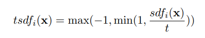Function 2
Each voxel has a weight w atteched to it to asses uncertainty of the corresponding sdf.
Finally, as mentioned prior, multiple viewpoints can be fused together in one TSDF to improve accuracy or added missing surface. This is done by weighted summation.
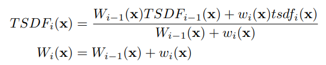Function 3 and 4 respectively
Depth maps and computations
Depth maps are a vital instrument in attempting to recreate a model from images. They are clearly useful in a wide range of fields, however tend to set back the process' speed by their high number of computations. Most image-based real-time pipelines adopt the depth map fusion approach[4].
Single-view depth maps are first estimated from each key frame and filtered for consistency and temporal smoothness, and lastely fused into a Truncated Signed Distance Function Volume (TSDF-V).
The reconstructed mesh can be then extracted from the fusion with the marching Cubes Algorithm [5]:
Marching Cubes Algorithm
An Algorithm, originally intended for usage in medical imaging, it creates a tirangle mesh using an interative divide-and-conquer approach. It processes 3D data in-order and calculates verticies using linear interpolation. The detail in images produced from the generated surface models is the result of maintaining the inter-slice connectivity, surface data, and gradient information present in the original 3D data. 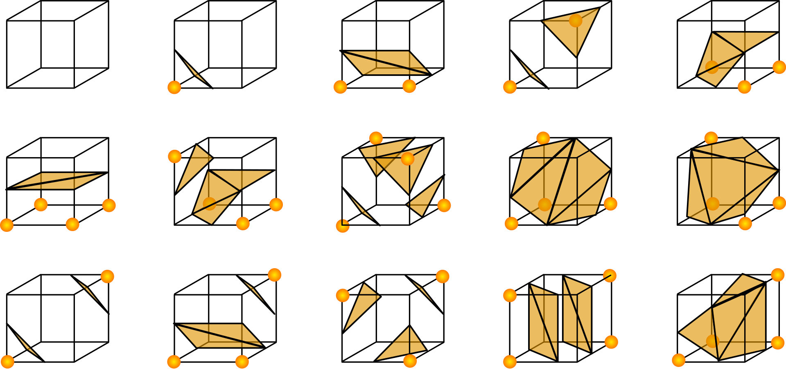
Figure 3. Triangulated Cubes-colorized[5]
This approach suffers as the maps are estimated individually on each key frame. Additionaly each map is estimated in full leading to substantial overlap in the results. Estimating the same surfaces multiple times causes unnecessary computations, and may cause difficulties delivering correct results in certain areas.(see Figure 1)
The paper proposes a method to combat these problems fitting real-time reconstruction from a monocular video. By jointly reconstructing and fusing the 3D geometry directly in the TSDF-V and a given set of monocular images and camera poses from a SLAM system, NeuralRecon can incrementally unproject the image features to form sequentially a 3D feature volume by utilising convolutions to process the feature volume and eventually outputting a sparse TSDF-V which is then gradually refined.
By directly reconstructing the implicit surface, the network is able to learn the local smoothness and global shape prior of natural 3D surfaces. This helps solve one of the issues introduced earlier of predicting separate depth maps.
GRU
To make the jointly produced shape globally consistent with the previous reconstructions a learning based TSDF fusion module using the Gated Recurrent Unit(GRU) is proposed.
While previous works commonly referred to SLTM for modeling, here a decision has been made to opt for a GRU based approach instead. GRU have been shown to be capabele of producing often comparable results with significantly faster computation times thanks to its simplicity. [6,7]

Figure 2. LSTM and GRU graphical illustrations side by side [6].
The GRU fusion makes the current-fragment reconstruction conditioned on the previously reconstructed global volume, hence creating a clear connection between the fragments correcting the problem, which appeared in other designs and yielding a joint reconstruction. This as a result, reconstructs a dense, accurate and globally coherent mesh. For exact calculation formulas see [6], however the main takeaway is, that similarly to the LSTM unit, the GRU has gating units that modulate the flow of information inside the unit, however, without having a separate memory cells. The GRU is forced to expose its full content and can control the flow of information when computing a new candidate.
The experiments go on to report, that the new predicition procedure also removes the redundant computation in depth-based methods, which allows for the use of larger 3D CNNs while maintaining real-time performance.
3D CNN
Convolutional neural network (CNN) is a form of an artificial neural network, specilized for their usefulness in analyzation of imagery in computer vision. A CNN has as the name suggests has convolutional layers. These recieve input from previous layers transform the input in some way and transfers it onwards. The Convolutional layers are able to detect patterns in the images fed to the network and learn the desired patterns. Becuase the layers pass one the results from one to another using a certain filter, bigger neural networks equal more defined results.
Convolution Operation
The action referred to as convolving, means the filter convolves across a certain block/volume of pixel/voxels from the input. The Convolution itself is a mathematical operation between two functions yielding a new third function, that is supposed to give a new representation of the relationship between the previous cubes.
Function 5
Datasets
To validate the system, ScanNet and 7-Scenes datasets have been used. Using this data helps achieve state-of-the-art performance on several 3D scene understanding tasks. However in this case it's put into action to validate the results from the experiments, measure the correctness and also see how the framework performs when placed in comparison to current state-of-the-art methods.

Figure 4. Example of ScanNet Dataset
ScanNet
ScanNet is a RGB-D video dataset containing 2.5M views in over a thousand scenes annotated with 3D camera poses, surface reconstructions, and semantic segmentations [8].
7-Scenes
The 7-Scenes dataset is a collection of tracked RGB-D camera frames. It can be used for evaluation of methods for uses such as dense tracking, mapping and more. [9]
Related Works
Multi-view Depth Estimation
The proposed framework uses knowledge and baselines set up from multiple previous works.
Before deep learning, renowned works in monocular 3D reconstruction have achieved good performance with plane-sweeping stereo and depth filters under the assumption of photo-consistency.
Learning based methods on real time multi view depth estimation[12,13] attempt to alleviate the photo consistency assumption using 2D CNNs with a data driven approach, they maintain low cost and near real-time performance.
For high-resolution images and when offline computation is possible, multi-view estimation is known as Multiple View Stereo (MVS). Learning based approaches[14,15] have been still limited to mid-resolution images due to memory constraints.
SurfaceNet[16] has taken a new approach to the problem and used a unified volumetric representation to predict the volume occupancy. Atlas[17] has proposed using the volumetric design in predicting the TSDF and semantic labels with 3D CNN.
A coarse-to-fine approach has been used in recent works to improve the pipeline created from the 3D CNNs.
3D Surface Reconstruction
When estimating the 3D surface position and producing the mesh an incremental TSDF-V fusion has been adopted in real time scenarios thanks to its simplicity and parallelization capability. Later on changed by RoutedFusion[18] from a simple linear addition into a data-dependent process.
Neural Implicit Representations
Recent works and the proposed system use a learned neural implicit representation by predicting the SDF with the NN from the encoded image features similar to PIFu[19] with the key difference that here sparse 3D convolutions are used to predict a discrete TSDF volume.
Methods & Implementation
With the goal being a dense 3D scene reconstruction and have it be both accurate and in real time the system follows the concepts introduced earlier and the process seen in Figure 5 to achieve this. With a sequence of monocular images and a camera pose trajectory provided by a SLAM system. NeuralRecon predicts a TSDF-V with a three level coarse to fine approach that gradually increases the density of sparse voxels.
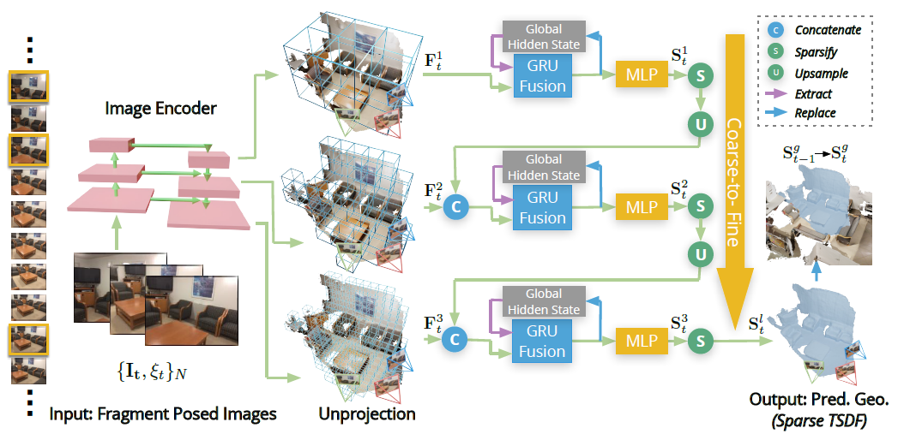Figure 5. (Notice: g stands for global, l for current level, t for time)
The 3D reconstruction is incremental and the input images are processed sequentially in local fragments of Frames. From this incoming stream of images a few Key Frames are selected as input for the NNs. The frames are then defined as an enclosed Fragment Bounding Volume (FBV) and it encloses all their view frustums aswell. Only the area within this FBV is considered during a fragment-reconstruction.
After the selection process they are fed into the image backbone to have the multi-level features extracted. The TSDF-V of a local fragment is simultaneously reconstructed fragment for fragment and fused with the global volume by a learning-based approach.
The features extracted are then back-projected along each ray into the 3D feature volume . The feature volume is obtained by averaging the features from different views according to the visibility weight of each voxel. Which is the number of views from which a voxel can be observed in that local fragment (This is seen in Figure 6).
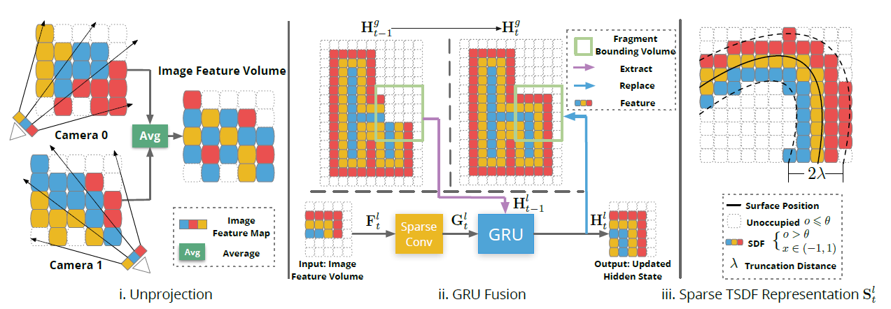Figure 6.
The resulting s are then fed into the GRU Fusion and later to the MLP.
The MLP used predicts both the occupancy score and the SDF value of each voxel in each local TSDF-V. The sparsity aspect of the TSDF-V comes from this occupancy score, which is checked for a lower bound and turned to void space if its less likely to be within the TSDF truncation distance. Afterwards the local volume is upsampled and concatenated with the next local feature volume, and given as input to the GRU fusion. This process repeats afterwards again.
The GRU fusion maintains the consistency between fragments during reconstruction. The reconstruction is continuous, taking into equation the results of previous reconstructions. The GRU used is one with a 3D convolutional module, where sparse convolutions extract the 3D geometric features . The geometric features are fused with the extracted local hidden state and the GRU produces the new , to be passed through the MLP and predict the TSDF-V of the corresponding layer. The hidden state will also replace the global hidden state for the next repetition. 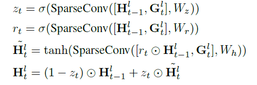
Functions 6,7,8 and 9 respectively.
Formally, denoting
as the update gate,
as the reset gate,
as the sigmoid function and
as the weight for sparse convolution.
At our last steps in this coarse-to-fine design, the last TSDF-V is integrated into the global one and the Marching Cubes algorithm is performed on this global volume to create the mesh.
Experiments & Results
In order to evaluate the this new design and the quality it manages to output a few experiments have been conducted. The experiments were on two indoor datasets, ScanNet(V2) and 7-Scenes . The researchers used the same training and validation data used in previous works [17, 21] with a corresponding baseline to make a fair comparison. The framework is first trained with the ScanNet dataset and then validated on 7-Scenes.
The 3D reconstruction quality is evaluated using 3D geometry metrics presented in [17] and the 2D depth metrics defined in [21]
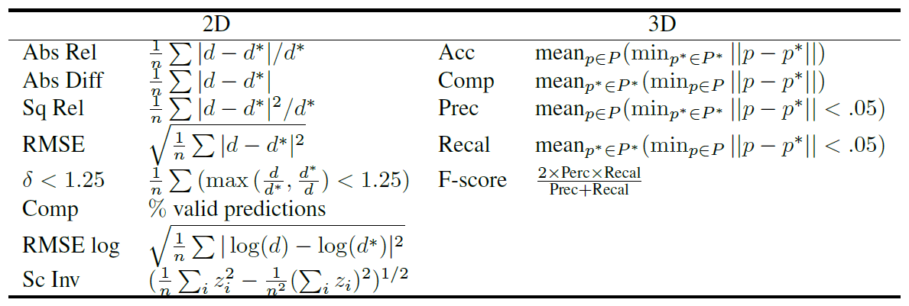
Table 1. Metric definitions.
n is the number of pixels for the ground truth and prediction
d is the predicted and ground truth depth.
t is the predicted and ground truth TSDFs.
p is the predicted and ground truth point clouds
The main copmarisons being made are between the discussed method and the following baseline methods in these categories:
1) Real-time methods for multi-view depth estimation.
2) Multiple view of NeuralRecon given the same efficiency.
3) Learning based SLAM methods.
The copmarisons made are goaled at demonstrating the reconstruction accuracy of NeuralRecon. Additionaly that the framework does not suffer from its real-time based aspect and a compare the system to other methods performing reconstruction and estimations simultaneously.
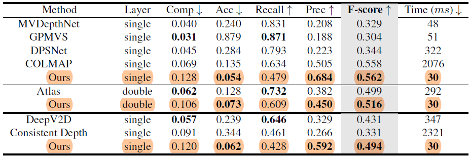Table 2. 3D geometry metrics on ScanNet.
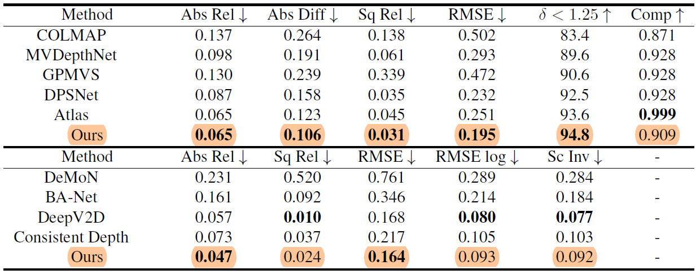Table 3. 2D geometry metrics on ScanNet.
Based on Table 2, we can see that the framework produces much better performance than recent learning-based methods and achieves slightly better results than COLMAP. While the tables speak strongly for themselves it's nevertheless important to mention that the method manages to surpass the volumetric baseline method Atlas on the accuracy, precision, and F-score scales. Where the shine falls is on terms of completeness and recallability, showing inferior performance compared to both depth-based methods and Atlas. Being an offline approach, Atlast has the advantagge of having a global context prior to its predictions. This leads to sometimes better results than the ground-truth on their part, due to its TSDF completion capability, this is though, still yet to be perfected showing also oversmoothend gemometries and inaccuracies.
In terms of the 2D metrics, NeuralRecon also outperforms previous state-of-the-art methods for almost all 2D depth matrics.
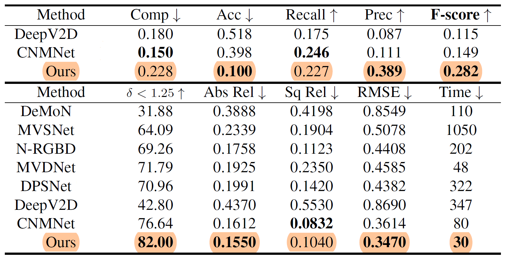Table 4. 3D geometry metrics (top block), 2D depth metrics (bottom block) on 7-Scenes. Time in ms.
As for the evalution on the 7-Scenes dataset, the method achieves comparable performance to CNMNet (state-of-the-art learning-depth-estimation method) and outperforms the rest.
Being a real-time method, perhaps would be most significant to mention is its efficiency. NeuralRecon works at a time cost of 30ms per key frame, achieving real-time speed at 33 key frames per second and outperforming all previous methods. This is about 10 times faster than Atlas. This is very much thanks to the prediction process removing unnecessary computations present in other methods.
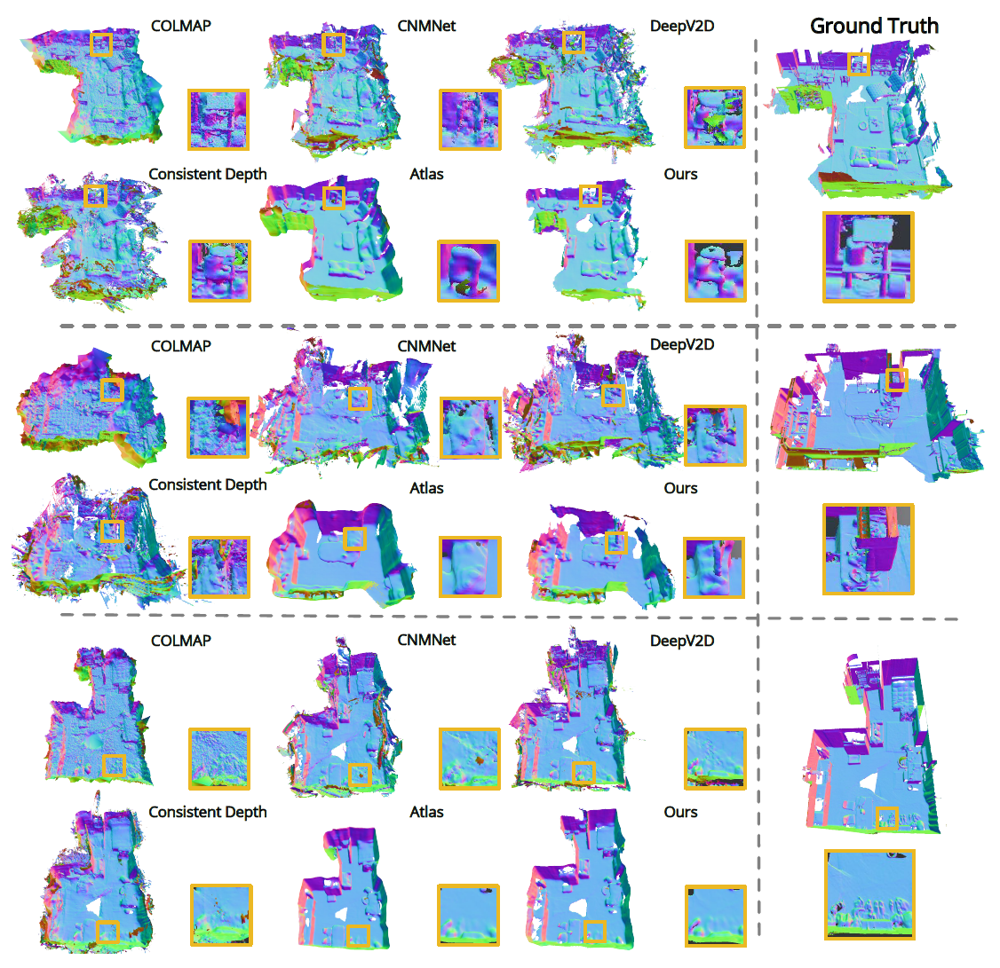Figure 7. Qualitative results on ScanNet. The color indicates surface normal. (See the original paper for the high resolution comparison)
As far as quality comes, compared to depth-based methods, NeuralRecon can produce much more coherent reconstruction results. The method also recovers sharper geometry compared to Atlas, which illustrates the effectiveness of the local fragment design in our method. Reconstructing only within the local fragment window avoids irrelevant image features from far-away camera views to be fused into the 3D volume.
Conclusion & personal remarks
NeuralRecon proposes a new novel system for real-time 3D reconstruction with monocular video. It uses joint reconstruction and sparse TSDF fusion to efficiently deliver a 3D mesh in real time, faster than any state-of-the-art technology before it. 3D sparse convolutions and GRU play a key role, as seen in the ablation study and can be viewed as the improving components to similar algorithms such as Atlas, coming before it. While improving the speed, it's accuracy has remained at top level. Old pipelines have been removed, and in their stead, the framework takes advantage of the power of neural networks and the learning element able to predict depth maps. Despite all this, further improvement remain possible; such as improving the accuracy further with methods seen in CNMNet. This has been a big step into fitting the framework and enabling real-time 3D recosntructions for commercial use and for downstream tasks and new possibilities that were locked priorly behind efficiency-gates or the graphical power needed.
It remains important to mention that the method and its testing have been limited to indoor scenes.
While fitting for some, many other fields require outdoors usage or at the very least outdoors compatibility. The Testing aswell has been done on a single system; Different GPUs optimized for different tasks may yield different results. The results as they are, are quite ground-breaking, and can pave the way for further optimizations and reconstructions algorithms to really highlight the usefulness. While the creators address the topic of outdoor scenes in an outside source, this remains to be untested due to ScanNet dataset being exclusively indoors. A big point I found personaly interesting and left almost unmentioned is the GRAM used has been reduced by around 8x. This immense drop opens the door for personal testing/experimenting. (from over 24GB before for a scene to around 3GB), a huge step towards enabling commercial usage.
References
- Jiaming Sun, Yiming Xie1,Linghao Chen, Xiaowei Zhou, Hujun Bao, Zhejiang University, SenseTime Research - NeuralRecon: Real-Time Coherent 3D Reconstruction from Monocular Video
- NeuralRecon: Real-Time Coherent 3D Reconstruction from Monocular Video Presentation Page
- Carlos Campos, Richard Elvira, Juan J. G´omez Rodr´ıguez, Jos´e M. M. Montiel, and Juan D. Tard´os. ORB-SLAM3: An Accurate Open-Source Library for Visual, Visual-Inertial and Multi-Map SLAM. ArXiv, 2020.
- Thomas Schops, Torsten Sattler, Christian Hane, and Marc Pollefeys. 3D Modeling on the Go: Interactive 3D Reconstruction of Large-Scale Scenes on Mobile Devices. In 3DV, 2015.
- William E. Lorensen and Harvey E. Cline. Marching Cubes: A High Resolution 3D Surface Construction Algorithm. SIGGRAPH, 1987
- Junyoung Chung Caglar Gulcehre, Kyung Hyun Cho Universite de Montreal, Yoshua Bengio Universite de Montreal CIFAR Senior Fellow Empirical Evaluation of Gated Recurrent Neural Networks on Sequence Modeling
- Cho, K., Van Merriënboer, B., Bahdanau, D., & Bengio, Y. (2014). On the properties of neural machine translation: encoder-decoder approaches. arXiv preprint arXiv:1409.1259.
- ScanNet: Richly-annotated 3D Reconstructions of Indoor Scenes Angela Dai, Angel X. Chang, Manolis Savva, Maciej Halber, Thomas Funkhouser, Matthias Nießner
- Jamie Shotton, Ben Glocker, Christopher Zach, Shahram Izadi, Antonio Criminisi, and Andrew Fitzgibbon. Scene Coordinate Regression Forests for Camera Relocalization in RGB-D Images. In CVPR, 2013
- Maimone, M.; Cheng, Y.; Matthies, L. (2007). "Two years of Visual Odometry on the Mars Exploration Rovers"
- Werner, Diana & Al-Hamadi, Ayoub & Werner, Philipp. (2014). Truncated Signed Distance Function: Experiments on Voxel Size. 8815. 357-364. 10.1007/978-3-319-11755-3_40.
- Kaixuan Wang and Shaojie Shen. MVDepthNet: Real-Time Multiview Depth Estimation Neural Network. In 3DV, 2018.
- Chao Liu, Jinwei Gu, Kihwan Kim, Srinivasa G Narasimhan, and Jan Kautz. Neural RGB-> D Sensing: Depth and uncertainty from a video camera. In CVPR, 2019.
- Henrik Aanæs, Rasmus Ramsbøl Jensen, George Vogiatzis, Engin Tola, and Anders Bjorholm Dahl. Large-Scale Data for Multiple-View Stereopsis. IJCV, 2016.
- Arno Knapitsch, Jaesik Park, Qian-Yi Zhou, and Vladlen Koltun. Tanks and Temples: Benchmarking Large-Scale Scene Reconstruction. ACM TOG, 2017.
- Mengqi Ji, Juergen Gall, Haitian Zheng, Yebin Liu, and Lu Fang. SurfaceNet: An end-to-end 3D neural network for multiview stereopsis. In ICCV, 2017.
- Zak Murez, Tarrence van As, James Bartolozzi, Ayan Sinha, Vijay Badrinarayanan, and Andrew Rabinovich. Atlas: Endto-End 3D Scene Reconstruction from Posed Images. In ECCV, 2020
- Silvan Weder, Johannes Schönberger, Marc Pollefeys, and Martin R. Oswald. RoutedFusion: Learning Real-Time Depth Map Fusion. In CVPR, 2020.
- Shunsuke Saito, Zeng Huang, Ryota Natsume, Shigeo Morishima, Angjoo Kanazawa, and Hao Li. PIFu: Pixel-Aligned Implicit Function for High-Resolution Clothed Human Digitization.In ICCV, 2019
- Chengzhou Tang and Ping Tan. BA-Net: Dense Bundle Adjustment Networks. In ICLR, 2019
- David Eigen, Christian Puhrsch, and Rob Fergus. Depth map prediction from a single image using a multi-scale deep network. In NeurIPS, 2014